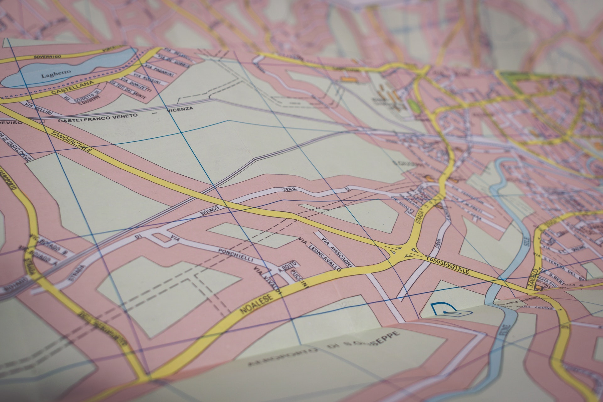

Stugan har varit kårens sedan starten. Vi använder den ofta i vår verksamhet tack vare dess närhet till staden. Stugan byggdes på 1800-talet av familjen Patriksson som flyttade till trakten från Småland, pga missväxt. Den gick sedan i arv ända tills den donerades till kåren av dåvarande ägaren, 6 generationer efter bygget.
Kontakta stugfogden på stuga@hs.se
Kör väg 23 mot Norrtälje från Stockholm. Sväng av avfart 42 efter ca 45 minuter. Fortsätt framåt i den första rondellen, och ta andra korsningen till vänster. Efter ca 15 minuter har du stugan på vänster sida.
